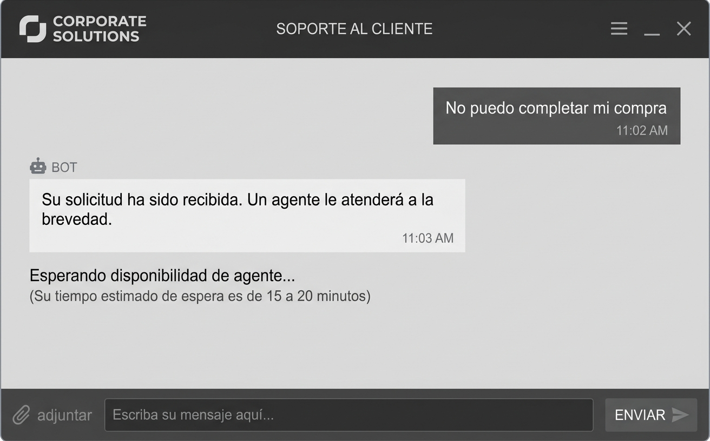
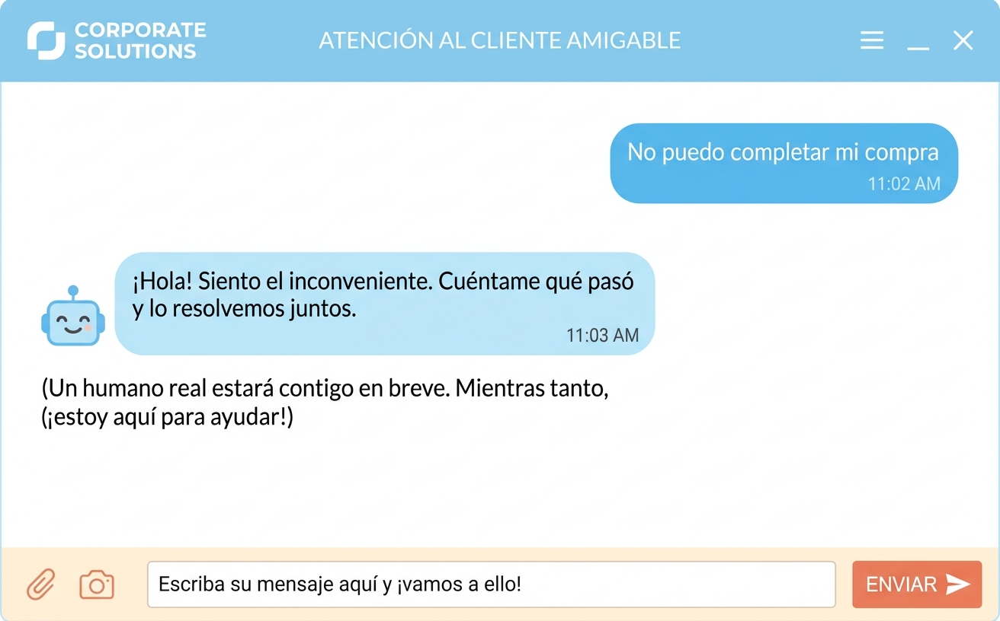

← Volver al portafolio
Tono de voz de un chatbot
Diseño conversacional para soporte de ventas
El problema del negocio
- Tasa de abandono de 62% en el primer intercambio.
- Las encuestas de percepción daban una puntuación de 2.8 sobre 5 en "satisfacción".
- Los tickets escalados a humanos decían:
- "El bot no me entendió"
- "Sentí que hablaba con alguien a quien no le importa lo que necesito"
Mi objetivo como Ux Writer
- Que el chatbot sonara alegre y animado, pero respetuoso,claro y útil.
- Que el usuario sintiera que se comunicaba con alguien dispuesto a escuchar y resolver sus problemas.
Modificando el tono de voz

Imagen referencial - Antes: respuestas formales y distantes.
Colaboración con diseño y desarrollo
Tuve que coordinar con branding para llegar a un tono de voz coherente con la imagen de marca que a la vez cumpliera las metas del negocio.
Coordiné con desarrollo para entender los retos de su área.
- Con diseño: mantener la identidad visual, pero permitir un tono más humano en los textos.
- Con desarrollo: empezar por los 5 flujos más usados y medir antes de escalar.
Resultados al primer mes
La satisfacción subió de 2.8 a 4.6 sobre 5.
El abandono en el primer intercambio bajó del 62% al 27%.
Los tickets escalados por "no me entendió" se redujeron en un 25%.
Mi aporte como UX Writer fue
- Definí la voz y el tono del chatbot en un documento guía:
- qué decía
- qué no decía
- cómo saludaba
- cómo se despedía
- cómo manejaba errores
- Reescribí los flujos de bienvenida, derivación a humano y cierre.
- Testeé las nuevas respuestas con 8 usuarios reales antes de implementarlas.
Me sorprendí
- Después de resolver el problema muchos usuarios dejaron mensajes de agradecimiento al despedirse del chatbot.
- El chatbot mantuvo un tono respetuoso y claro.

Imagen referencial - Después: respuestas cercanas, claras y ágiles.
Limitaciones técnicas
Tuve que trabajar con un modelo de lenguaje entrenado con datos antiguos, que no entendía ciertas
expresiones peruanas actuales. Tuve que escribir los flujos con un lenguaje más neutro sin perder cercanía.
Hoy (2026) lo haría distinto porque
Ahora los modelos permiten personalización por contexto emocional. Podría diseñar
un tono que se adapte al estado del usuario: más respetuoso y cordial si está frustrado, más ágil si está
apurado.